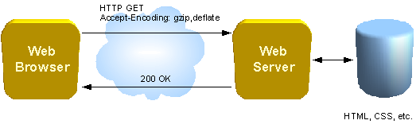

Съдържание
Преглед. Какво е Сокет?
Мрежовите сокети се оприличават като крайна точка на комуникация между процеси в една компютърна мрежа. В днешно време повечето комуникации между компютрите са базирани на Internet Protocol (IP). Повечето имплементации на интернет сокетите са базирани на стандарта Бъркли (BSD).
Един мрежови сокет се характеризира със комбинация от следните 3 неща:
- Локален адрес на сокета
- Отдалечен адрес на сокета. Само при остановена TCP връзка. По-късно ще говорим и за това.
- Протокол - TCP, UDP, or others
Видове интернет сокети са:
- Datagram sockets, още познати като connectionless сокети, които използват User Datagram Protocol (UDP)
- Поточни сокети или известни като connection-oriented, те използват Transmission Control Protocol (TCP)
- други...
Какво е TCP?
Transmission Control Protocol (TCP) е един от базовите протоколи които използва IP. По някой път дори го пишат TCP/IP. Това което предлага TCP е надеждност, подреденост и проверка за грешки при изпращането на пакетите. При TCP е сигурно че отсрещният процес ще получи пакетите които трябва и то в конкретния ред в който са изпратени. Надеждността на обмена се осигурява от контролни суми и сравнения между изпратените и пристигналите данни.
IP работи чрез обмяна на информация наречена пакети. Пакетът е последователност от байтове и се състои от заглавна част и тяло. Заглавната част описва източник, дестинация и контролна информация. Тялото съдържа данните които се предават.
В сравнение с UDP, който може незабавно да започне да изпраща пакети TCP изисква установяването на връзка преди изпращането на данни. Съществуват три фази при осъществяването на TCP комуникация:
- установяване на връзката
- пренос на данни
- преустановяване на връзката
Запознаване с HTTP

HTTP е протокол за трансфер на хипертекст. Използва мрежов протокол, от приложния слой на OSI модела, за пренос на информация в компютърни мрежи. Създаден като средство за публикуване на HTML страници, протоколът довежда до формирането на Световната уеб мрежа. Разработването на протокола е било координирано от Уеб консорциума (World Wide Web Consortium) и IETF (Internet Engineering Task Force), завършвайки с публикуването на серия от заявления за обсъждане (RFC), от които RFC 2616 (от юни 1999) е със статут на стандарт и описва HTTP/1.1 — най-новата и с най-широка употреба HTTP версия.
В HTTP протокола се използват понятия като клиент (обикновено това са Web-браузърите т.е. самите приложения, a не физически хостовете в мрежата) и сървър (това са Web-сървърите - т.е. самите приложения, а не хостовете в мрежата).
Една HTTP сесия е последователност от заявки и отговори. Клиента осъществява TCP връзка със сървара на определен порт. HTTP сървър слуша на този порт за съобщението на клиента. Щом получи съобщение сървърат изпраща отговор нампример: "HTTP/1.1 200 OK" и самото съобщение, което може да е цялата уеб страница. 
Уеб Сокети
Уеб сокетите са ново поколение технология позволяваща двупосочна връзка за приложения които се изпълняват в браузери които съвместими с HTML5 Уеб Сокети. Уеб сокетите имат удобен JavaScript интерфейс.
Уеб сокета е просто стандартен TCP сокет между клиента и сървъра. Контактът започва като HTTP връзка която след като 2-та хоста разменят разпознаващи пакети помежду си преминава на ниво TCP. След това всяка страна може да изпраща данни без да прави HTTP заявки.
Уеб сокетите ни дават удобен механизъм за двупосочна комуникация който замества правенето на множество HTTP конекции, например XMLHttpRequest или "iframe" и long polling. Преди време създаването на приложения, които се нуждаят от такава комуникация между клиент и сървър (напр. Чат приложение или Игра) са изисквали да се правят множество постоянни HTTP заявки към сървъра, за да поддаржат своето състояние актуално. Но това води до множество проблеми:
- Сървърат е принуден да използва множество TCP конекции за всеки клиент.
- Свързващия протокол изисква изпращането на хедъри със всяко клиентско съобщение, а тези хедъри забавят цялото съобщение.
- Клиентският код трябва да поддържа мапинг на излизащите и пристигащите конекции, за да може да следи отговорите на сървъра.
Уеб Сокет Събития
| Събитие | Манипулатор на събитие | Описание |
|---|---|---|
| отваряне | Socket.open | Това събитие се появява когато сокет конекцията е установена. |
| съобщение | Socket.onmessage | Това събитие се появява когато клиента получи данни от сървъра. |
| грешка | Socket.onerror | Това събитие се появява когато има грешка в комуникацията. |
| затваряне | Socket.onclose | Това събитие се появява когато концекцията е затворена. |
Уеб Сокет Методи
| Метод | Описание |
|---|---|
| Socket.send() | Този метод се използва за да предаде данни по конекцията. |
| Socket.close() | Този метод се използва за прекратяване на съществуваща връзка. |
Примери
И ето и първият примерен код:

Какъв е проблемът в този пример обаче. Тук имаме клиентско приложение, което чака да получи съобщение от сървъра, който се намира на "ws://localhost:9998/echo". Такова приложение обаче няма. За целта трябва да се направи такова. Варианти за език на който може да се напише са много, например: Java, C#, Python, NodeJS и други. За всеки от тези езици има библиотеки, които позволяват използването на Уеб сокети.
Keep-alive, Heart-beats
Уеб сокет протокола дефинира така наречените Ping-Pong фреймове които се използват за определяне на състоянието на мрежата те се наричат keep-alive и heart-beats.
Например ако искаме да разберем дали има провалени връзки, например някой затвори браузъра си или просто затвори тази конекция сървърът няма да получи отговор на keep-alive и така ще разбере че този клиент вече го няма. Друг пример е ако искаме да показваме на потребителите какво е забавянето между отделните съобщения (latency metrics).
Уеб Сокети - SocketIO
Известна библиотека за Уеб сокети на Javascript, която предлага и сървърна и клиентска имплементация е SocketIO. Тя предлага лесно и удобно API за използването на сокетите. Също така позволява да се правят и много други неща бързо и лесно като например събитие когато някой клиент излезе от приложението или пак "стаи". В тези стаи могат да се включат определени клиенти и те да могат да си изпращат данни само помежду си като знаят точно кои са те.
В Github има качен мой примерен код който показва имплементацията на просто клиент-сървър приложение което използва Уеб сокети с SocketIO и NodeJS за сървърната част. За да тествате ще трябва да си изтеглите NodeJS от сайта им.
Ресурси
Network Socket TCP Transmission Control Protocol http://bg.wikipedia.org/wiki/HTTP - HTTP Hypertext Transfer Protocol Web Socket Specification Tutorials Point - Web Socket W3C websocketsСнимковия материал е намерен от изображения в google.com.